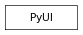

pymel.core.uitypes.PyUI¶

- class PyUI¶
- asQtObject(mayaName)¶
Given the name of a May UI control, return the corresponding QWidget. If the object does not exist, returns None
Note
Requires PyQt
- delete(*args, **kwargs)¶
This command deletes UI objects such as windows and controls. Deleting a layout or window will also delete all of its children. If a flag is used then all objects being deleted must be of the specified type. This command may not be edited or queried. NOTE: it is recommended that the type flags be used to disambiguate different kinds of objects with the same name.
- Flags:
Long name (short name) Argument Types Properties collection (cl) bool 
- Object names for deletion are all radio or tool collections.
control (ctl) bool
- Object names for deletion are all controls.
editor (ed) bool
- Object names for deletion are all editors.
layout (lay) bool
- Object names for deletion are all layouts.
menu (m) bool
- Object names for deletion are all menus.
menuItem (mi) bool
- Object names for deletion are all menu items.
panel (pnl) bool
- Object names for deletion are all panels.
panelConfig (pc) bool
- Object names for deletion are panel configurations. Flag can have multiple arguments, passed either as a tuple or a list.
radioMenuItemCollection (ric) bool
- Object names for deletion are all radio menu item collections.
toolContext (tc) bool
- Object names for deletion are all tool contexts.
uiTemplate (uit) bool
- Object names for deletion are all UI templates.
window (wnd) bool
- Object names for deletion are all windows.
Derived from mel command maya.cmds.deleteUI
Example:
import pymel.core as pm # Example 1. # # Create a simple window and then delete it and all of its children # with one 'deleteUI -window' command. # window = pm.window() pm.paneLayout() # Result: ui.PaneLayout('window1|paneLayout2') # pm.button() # Result: ui.Button('window1|paneLayout2|button13') # pm.showWindow( window ) pm.deleteUI( window, window=True ) # Result: u'' # # Example 2. # # Create a window with a number of buttons and delete a few of the # buttons with the 'deleteUI -control' command. # window = pm.window() pm.columnLayout() # Result: ui.ColumnLayout('window1|columnLayout24') # pm.button() # Result: ui.Button('window1|columnLayout24|button14') # pm.button() # Result: ui.Button('window1|columnLayout24|button15') # pm.button() # Result: ui.Button('window1|columnLayout24|button16') # b1 = pm.button() b2 = pm.button() b3 = pm.button() pm.showWindow( window ) pm.deleteUI( b1, b2, b3, control=True ) # Result: u'' #
- classmethod exists(name)¶
- getParent()¶
- name()¶
- parent()¶
- rename(*args, **kwargs)¶
This command renames the UI object passed as first arument to the new name specified as second argument. If the new name is a duplicate, or not valid, then re-naming fails and the old name is returned.
Derived from mel command maya.cmds.renameUI
Example:
import pymel.core as pm # Create a window with a single button. # window = pm.window() pm.columnLayout() # Result: ui.ColumnLayout('window1|columnLayout10') # pm.button( 'exampleButton', label='Example' ) # Result: ui.Button('window1|columnLayout10|exampleButton') # pm.showWindow( window ) # Edit the button label. # pm.button( 'exampleButton', edit=True, label='New Label' ) # Result: ui.Button('columnLayout10|exampleButton') # # Rename the button. # pm.renameUI( 'exampleButton', 'newButton' ) # Result: u'newButton' # # Query the button label using the new object name. # pm.button( 'newButton', query=True, label=True ) # Result: u'New Label' #
- shortName()¶
- type(*args, **kwargs)¶
This command returns the type of UI element such as button, sliders, etc.
- Flags:
Long name (short name) Argument Types Properties isType (i) unicode
- Returns true|false if the object is of the specified type. Flag can have multiple arguments, passed either as a tuple or a list.
listAll (la) bool superClasses (sc) bool
Derived from mel command maya.cmds.objectTypeUI
Example:
import pymel.core as pm pm.objectTypeUI( 'viewPanes' )
- window()¶